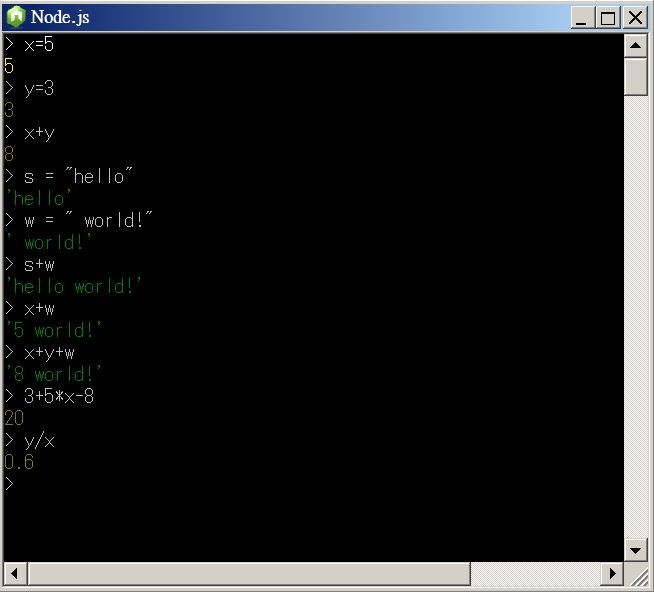
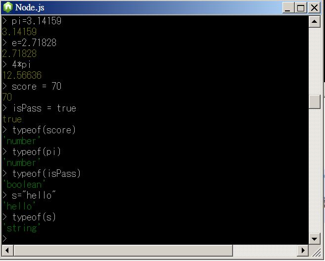

用 Node.js 學 JavaScript 語言
簡介
Node.js 是 Ryan Dahl 基於 Google 的 V8 引擎於 2009 年釋出的一個 JavaScript 開發平台，主要聚焦於 Web 程式的開發，通常用被來寫網站。
但是、要開發網站就勢必要把「 HTML, CSS, Web」等等技術扯進來，這對那些單純想用 JavaScript 做為第一門語言的學習者而言，勢必是非常困擾的。有鑑於此，我們將撰寫一系列用 Node.js 學基礎 JavaScript 語法的文章，以便讓初學者也能透過 Node.js 這個環境學會 JavaScript 語言。
node.js 的安裝
您可以 node.js 的官方網站中下載並安裝此一開發環境，網址如下：

您可以點入官網的 INSTALL 連結下載安裝程式，然後一直按下一步就可以安裝完成了。(筆者所使用的環境是 Windows 7，所以下載時會得到 windows 版的安裝檔，例如 node-v0.10.26-x64.msi 這樣的檔案)。
筆者在 Windows 7 中安裝完成之後，點選「開始/所有程式/node.js」可以看到如下畫面：

在上圖中，我們點選了 node.js command prompt 起動了一個命令列環境，然後寫了一個 hello.js 的程式如下。
檔案： hello.js
console.log("hello!");
我們將 hello.js 檔案放在 D:\jsbook\ 這個資料夾裏面，接著用 node hello.js 這個指令執行該程式，於是畫面中會出現該程式的執行結果，印出 hello! 訊息！
然後在右下半部的圖片中，我們點選了綠色圖示的 node.js 交談環境，接著輸入一些簡單的指令，這個環境可以讓您很容易的與 node.js 互動，試驗一下 JavaScript 指令的執行結果。
變數與指定
要學習一個程式語言，通常必須從變數宣告開始，變數可以想像成用來存放一些值的容器。舉例而言，當我們寫下 x=5 的時候，就是在 x 這個變數裏，放入 5 這個數值，同樣的我們也可以設定變數 y 為 3。
為了學習這些慨念，請您打開「開始/所有程式/node.js」這個綠色圖示的程式，然後輸入下列指令看看：

您可以看到在上述操作中，我們宣告了 x,y,s,w 等變數，其中 x=3, y=5, s="hello", w=" world!" ，由於 x,y 都被指定為整數，因此可以進行加減乘除的運算，而 s,w 則被指定為字串，因此只能執行連接運算，在 JavaScript 中的字串連接也是採用加法符號 + 表示的。
基本型態
JavaScript 的變數，可以是「數值 (Number)、字串 (String) 、布林 (Boolean) 、陣列 (Array) 或物件 (Object)」等型態，其中的陣列與物件是複合型態，其他三種為基本型態，以下是一些關於基本型態的操作指令。

結語
在本文中，我們從安裝 node.js 開始，介紹了如何使用 node.js 開發環境，以及最基本的 JavaScript 程式觀念。在下一期當中，我們將介紹 if, for, while 等流程控制語法的概念，然後再介紹函數這個基本的模組化概念。
作者： 陳鍾誠 email: ccckmit@gmail.com